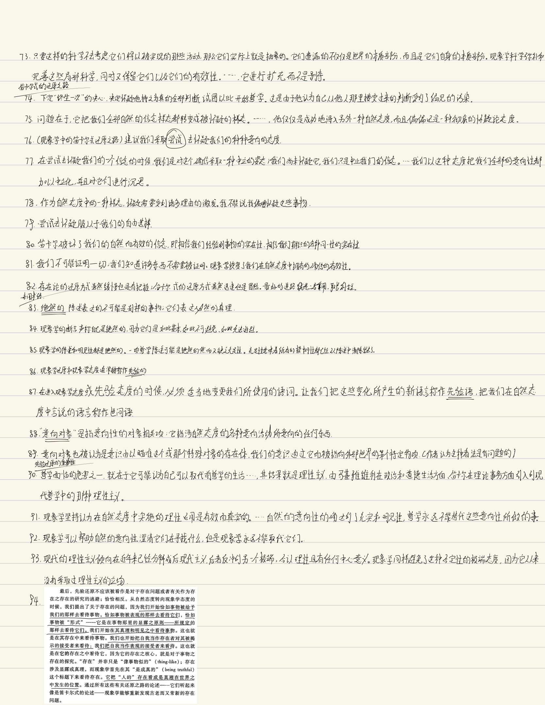

《现象学导论》读书笔记
采用手写的方式记录。
2024-10-30：似乎时间有点不够用，后面的章节由电脑打字记入。



# 第五章 知觉、记忆和想象
甚至在我想象的时候，一切意向性所固有的同一性综合仍然生效。想象的对象经过对它的很多想象而保持同一
我们想象的事物对我们能够就其做出的幻想是有所限制的
想象也是在一种信念样态中运作，但是这种信念样态不同于知觉和记忆的信念样态；它是非现实的，仅仅是 “好像”。
（预期形式的想象）我们不是在复活以前的经验，而是在预期未来的经验。
我们以不同的方式把自己投射到将来完成式
要能有效的实行这种透视，还是得需要相当大的自我力量才行
# 自我的移置
在自我的移置中，此时此地的我能够想象、回忆或者预期我自己处在别的某时某地的鲸鱼，因此，这种移置的形式结构是我们可以生活在未来和过去，生活在自由想象的无人之境。意识的这些被移置的形式都是基于知觉而派生的，知觉给它们提供类原材料和内容。
因为在看到新事物并且把某种倾向性加诸其上的时候，我们以前看到的东西又重新苏醒过来。移置使得这样的情况能够发生
自然态度在这些事务上显得十分笨拙，它总是指望某种事物般的替身，让这个替身在作为接收者的我们和在场与缺席的事物之间充当中介
# 第六章 语词、图像和象征
知觉使我们接触到世界中的事物，知觉的变化形式则可能发生在诠释方面，即我们如何直接的诠释世界呈现给我们的对象
# 语词的在场
一种新的意向开始活动，它使这些被知觉到的标记变成语词。这种新的意向被称作符号性的意向，因为它把意义赋予标记。它显然是一种空虚意向。它是一种被奠基的意向性，属于某种更大的整体的一个非独立部分，因为它依赖于把变成语词的标记呈现出来的知觉基础。
符号性意向之 “箭” 直接穿过被知觉到的语词而指向晒在的布利特宾馆，而不是指向一个意象。
符号性意向也不同于那种伴随着知觉的空虚意向。渗透在知觉中的空虚意向都是连续而不断变化的。言辞的符号性意向则相反，它是离散的、不连续的。
符号性意向把那些可以放入句法并组成称述的诸多离散的意义确立起来。
现象学的批评者常常说现象学依赖内省，依赖对于主观的心理之物的直观。
知觉性直观充实了许多空虚的符号性意向，又激发起更多的意向。
符号性意向指向缺席的事物，但是这种意向也能够在知觉、在直观之中得到充实。
符号性意向引入三个元素：指称、语词和意义或含义
# 图像
符号性意向向外指向事物，而图像性意向则把事物拉到近前。
图像行为更加具体，而符号行为更加抽象
图像的在场具有两可性
# 指号、象征或信号
语句通常为我们联结对象；它们给对象命名，然后就该对象有所言说。指示性符号和语词之间的一个重要差别在于，前者没有进入语法，而后者本质上是句法性的。
# 多样性的丰富，同一性的增强
同一个对象或者事件可以被象征、被图像化，以言辞的方式被意向，也可以被知觉；它也可以被想象、回忆和预期，它历经所有这些变换而依然是同一个事物。我们不是看到我们把很多不同的显像与同一个事物联系起来，而是同一个事物本身就在各种新的方式上被给予。在这种呈现之流之中，同一个事物被一次又一次地辨识出来。它自己地同一性得到增进和强化。
# 第七章 范畴意向和范畴对象
范畴的意向性：这是对事态和命题进行联结的意向，是我们在进行述谓、联系、汇集以及把逻辑操作引入我们经验到的东西的时候发挥作用的意向
两种意向活动的差异：一种是对于某个对象的简单意向，另一种则是形成有关这个对象的判断。
范畴的 (caregorial) 指的是那种把某个对象加以联结、把句法引入到我们所经验到的东西之中的意向活动。
# 来自经验的判断之发生
我现在把整体记示成包含着这个部分的整体。整体和部分之间的一种关系得到联结和记示。在这个时候，我们可以宣布：“这辆轿车是有损伤的” 这种成就就是范畴直观，因为范畴对象即在其联结之中的事物被变成实际对我们在场的。我们不仅仅使这辆轿车对我们在场，而且使这辆轿车之是有损伤的变成在场的
我们已经从感性转到理智活动，从单纯的经验活动转到一种初始的理解活动。我们已经从单线意向性即知觉转到多线的意向性即判断。我们已经进入范畴思维
我们描述了当我们从简单知觉转到范畴意向即思维的时候发生的意向性的转换。我们所描述的意向性的成就，乃是人的语言和言语的思想基础。我们之所以能够使用语言，就是因为我们能够进行这种构造范畴对象的意向活动。界定着语言的句法，被点击在范畴意向中所发生的对于整体和部分的联结之基础上。
理性意识的能力支撑着语言的能力
经验到判断的转变具有的含义 ：
- 我们中断了知觉的连续性，五年回过头来产看我们一直在经验的东西，而且还开创一个新的同一性层面。这个新的开端安置了一种新的意识，也罢一种新的对象即事态当作这个意识的对象相关项安置下来
- 在知觉中，同一性是通过多样性而被给予的 —— 需要一种新的意义以及新的强度层次。我们现在得到的是范畴意识中的同一性，通过言语而被呈现、保存和传送的同一性
- 范畴对象的同一性是一次性地呈现地。整体连同一部分 (whole-with-part) 是一次性地、同时来动。范畴对象的这种同时性是它的离散性的有一个方面，必须将其与直觉经验的连续性特征加以对照
范畴对象的确立被称作构造
在现象学那里，“构造” 一个范畴对象意味着使它显露，联结它，展示它，实现它的真理。
我们必须服从于事物显露它们自己的方式。在这个方面的服从并不是为了给我们的自由加上种种限制，而是要达到我们理智的完善。
范畴对象和范畴意向显然奠基于简单对象和简单意向。它们是非独立的部分。人的理智活动建立在感性活动的基础上，最后，述谓的意向性 (predicative intentionality)—— 我们以这种意向性来述谓对象的特征并宣布 “S 是 p”—— 是范畴活动的显著形式；相反，“前述谓的” 这个词用来指称那种先于范畴活动的经验和意向性。
# 新的同一性层面，新的多样性
当我们范畴性的意向立方体，我们得到的不仅仅是通过侧面、视角面和外形的多样性而被知觉到的立方体的同一性，同时也是通过记忆、想象和预期的多样性而得到的同一性
在人的意识中，知觉、想象、回忆和预期都表现出它们受到的规整所产生的效果，而这种规整的方向，就是要让它们在理性思维中达到完成
立方体的同一性是知觉和思想之间的桥梁
# 范畴对象
范畴对象是事物显现的方式；它们不是主观的，不是心理学意义上的 “心灵之中的事物”
我们就是如此被构造的，以至于能够意向在其在场状态的事物，也能意向在其缺席状态的事物
尽管我们的大部分言语都指向缺席的事物，但是它能够求助于在场的事物来确证或驳斥我们有关缺席事物的言论。一种同一性综合发生在这两者之间：一方面是我们曾经意向过的缺席状态的事态，另一方面则是我们现在所意向的在其在场状态上骑着确证作用的同一个事态。
# 对于意义之为心灵之物或者概念之物的排除
传统的看法认为，语词的意义，我们提出的判断或者命题，以及我们所具有的观念，都是某种心灵之物或者概念之物，某种与我们更为亲密的事物，某种从来不会缺席的事物。
现象学能够表明我们不需要把判断和意义设定成心灵的存在体，或者设定成心灵和事物之间的中介者。
从 “是一个事态” 转变到 “是一个判断”，这个变化的发生对应着我已经采纳的新态度。让我们把这种新态度称作 “命题性态度”，把确立它的反思称作 “命题性反思” 或者 “判断下反思”
它是我们借助命题性反思而进图命题性态度的时候出现的一个呈现的维度，一种呈现方式的变化。它出现在我们改变关注点的时候。命题不是一种固有的存在体；它是正在被联结的世界的一部分，只不过正在被当作仅仅是某人的呈现来对待：在我们谈论的事例中，它正在被当作使你的呈现来看待。它是你的判断。
即使我们指涉一个判断，我们也是在指涉世界，不过指涉的是正如某个人所主张的世界。
现象学不是把判断、命题和含义假定成中介性的存在提，而是把它们看作是与命题性态度和命题性反思相关联的东西。
我们先是从事态开始，然后转到事态之为被主张的事态，再后来转到事态之为得到确证的事态
# 再论范畴行为和范畴对象
范畴对象：能够脱离开它的直接语境，并且通过语言的使用而与其他地方联系起来
范畴意向性把我们提升到完全是属人的真理形式上，这种真理涉及言语和推理。但是，如果说它允许这种真理形式，那么它也就允许完全是属人的对于真理的滥用；它使得差错和虚假成为可能，这些差错和虚假的规模之大，足以让错觉、错误的记忆以及错误的想象等等较低层次的 意向相形见绌。
一旦构造了范畴对象，我们就能够把这些对象形式化，并且注意形式化所得到的诸多形式的一致性或者不一致性
对于命题为真来说，逻辑的一致性是其必要条件，如果命题由于逻辑形式而发生自相矛盾，那么它们就先天地不可能被我们关于事物本身的经验所证实
现象学区分开两种形式系统，一种形式系统属于对象和事态以及事物的 “存在论” 方面，另一种形式系统属于判断或命题以及意义或含义的区域。研究对象或事态所具有的形式结构的科学，被称作形式存在论，研究命题和意义的形式结构的科学被称作形式判断学。
# 模糊性现象
人的言语能力，这种赋予我们作为人的尊严的高贵能力，也使得我们有可能在实际上没有进行思考的时候却显得是在思考
应该把模糊性和无知与差错区分开；无知和差错是另外两种与真理和范畴对象有关的缺失。
- 在无知状态，我们完全没有试图去联结有关的范畴对象；我们只是对这个问题保持沉默。
- 在发生差错的时候，我们表述有关某事物的意见 ，我们很明确地这么做，然而结果却表明我们地意见是不正确的。
- 模糊性处在无知和差错之间。它是尚未成形的思想。
模糊性可能怀有不一致性，也可能怀有不融贯性 (incoherence)。不一致性意味着我们的言论中有一个部分与另一部分按照形式的逻辑结构表来说是矛盾的。而不融贯性则意味着我们的判断内容没有被桥当的组合。
# 范畴对象和人的理智
在现象学那里，语言的句法元素被称作语言的伴随范畴性的部分 (syncate-gorematic part), 因为它们总是 “伴随着” 言语的范畴性的部分，也就是单纯给对象和特征进行命名的辞句
现象学不只是考虑语法的语言学功能，就像结构语言学所做的那样；它还把句法与成真的活动、与明见行为联系起来
范畴领域是理性的空间；这个领域是由各种错综复杂的意向性所构造的，而这些意向性正是现象学要探索的东西
思维之中的精确性和明晰性并没有把事物原子化，而是让我们能够更加敏锐地领悟整体图景；由于我们领悟了数目，所以能够确切地领略森林
# 自我的现象学
# 经验自我和先验自我
自我有着令人惊异的两可性 (ambiguity):
一方面，它是世界的一个很平常的部分，是在世界中栖息的众多事物之一。如果我们把自我简单地看成世界万物中的一物，那么就是在把它当作所谓经验自我来看待
另一方面，就是这种同样的自我也可以与世界相对峙：它是显露的中心，世界以及世界之中的一切都对它表现它们自身。当我们以这种方式来考虑自我的时候，它就再也不仅仅是世界的一个部分；他就是所谓先验自我
经验自我和先验自我不是两个存在体；它们是同一个存在者，然而是以两种方式被考虑的存在者
即使是作为先验自我，自我的意向性特征也要求它拥有与之关联的事物和世界。自我和世界是彼此关联的要素。然而，当自我被看成是拥有世界的自我时，它就再也不是只是世界的一个部分。它作为世界为之 “被给予” 的接收者而与世界关联。
心理主义与生物主义一道，都把意义和真理当作属于经验性事实的事情来看待，而不是当作一个支撑着并且因此超越经验之物的维度，不是当作属于事物的存在的维度。
这里能看出来现象学十分注重与事物之间的联系，它否认其它学说的基础也是如此。你只要认可 “意向性”，你就必定会认可现象学。当然，只要意向性这东西不被认可，那么现象学的大厦轰然倒塌。我个人从目前的生活经验来说，可能会认为心理主义和生物主义有它的正确性，但说实话，如果认可这两个观点，生活显得过于无趣，还是让自己更倾向于现象学吧。
# 什么是先验自我
按照心理主义的看法，甚至在各门科学那里，我们所做的也不是揭示存在的东西；我们只是做出反应
尽管我们是生物学和心理学意义上的受造物，我们的知觉和判断需要大脑和神经系统以及主观的反应，但是在进行判断、证实以及推理活动的时候，我们表述的意义和达到的呈现却能够与我们的生物学和心理学的存在方式相区别。
我们除了是生物学的、心理学的以及主观的存在者之外，我们还作为执行者而进入理性的空间，进入理性之物的领域，而且在这样做的时候，我们 “跨越出去”，超越我们的主体性；我们作为先验自我而进行活动。
我们是生物学的和心理学的有机体，除此之外，我们还是理性存在者，属于康德所谓的 “目的王国”；当我们承认自己是如此的时候，我们就是在把自己当作先验自我来看待。
既然我们的理性使我们成为人，所以现象学就是对于我们自己的人性的探索。
我能够作为一个先验的自我而行动，而非人类的动物却不能如此。
第一次看这句话的时候，我认为这句话是不对的。现在我想通了，如果你不能进入理性的空间，那么你就没有先验的自我，而动物很难做到，因为它们的语言只是指示而非辞句，没有进入范畴领域，更别提理性。
# 先验自我的公开性
参与理性活动的，不是孤独的觉察，不是巨大而空洞的意识领域，而是理性的动物
先验自我的行为是公开的，犹如这些行为所涉及的身体是公开的。这些行为都是实际的或者潜在的介入，而不只是私自的思想、、
# 现象学态度中的自我
在自然态度中，我们拥有一个世界，我们运用理性，我们跨越在场和缺席进行同一性认定，我们进行确证和驳斥，我们也撒谎、欺骗和陷入谬误；但是在现象学态度中，我们澄清所有这些所作所为都是什么
对自我的认定过程中存在着三个阶段：
- 知觉及其变体的意向行为的执行者达到一种同一性
- 范畴活动的执行者达到一种提高的同一性
- 自我不仅发展出越来越多的意见或科学真理，而且还反思什么是拥有意见以及什么是追求和证实科学的宣称，在这个时候，自我达到更进一步的同一性
# 自我与肉身性
“亲吻的时候，你是给出了吻还是获得了吻？”
当自我认定世界上的事物以及它自己的身体的时候，它也在不断地认定它自己。正是同一个自我在回忆它自己 25 年前爬上这棵树的情景，在预期第二年冬季下雪天看见这同一棵树的情景，在想象这棵树旁边要是再种上几棵别的树木的话看起来会是什么样子
我们作为先验自我的同一性，是通过再回忆中进行的移置和认定而被确立起来的：此时此地的我，与我在记忆中回忆起来的彼时彼地的我是同一个我。
在涉及记忆的潜伏性的时候，先验自我和经验自我之间的两可性显得特别突出
# 非定点的自我
自我通过多样性而被确立起来。存在着自我的同一性，不过这种同一性恰恰是通过离心作用 (decentering) 而达到的
# 时间性
# 时间性的层次
时间结构的三个层次：
- 世界时间，即钟表和日历时间。客观时间是公共的、可证实的；我们可以用时钟精确地测量出一个过程花费了多少时间，而且我们也会对测量结果取得一致意见。
- 内时间。它也可以被称作内在的时间或主观的时间。这种时间属于心灵活动和经验即意识生活事件的绵延和序列。内在时间不是公共的，而是死人的，
- 内时间意识。内时间意识是对于内在时间性的觉察或意识